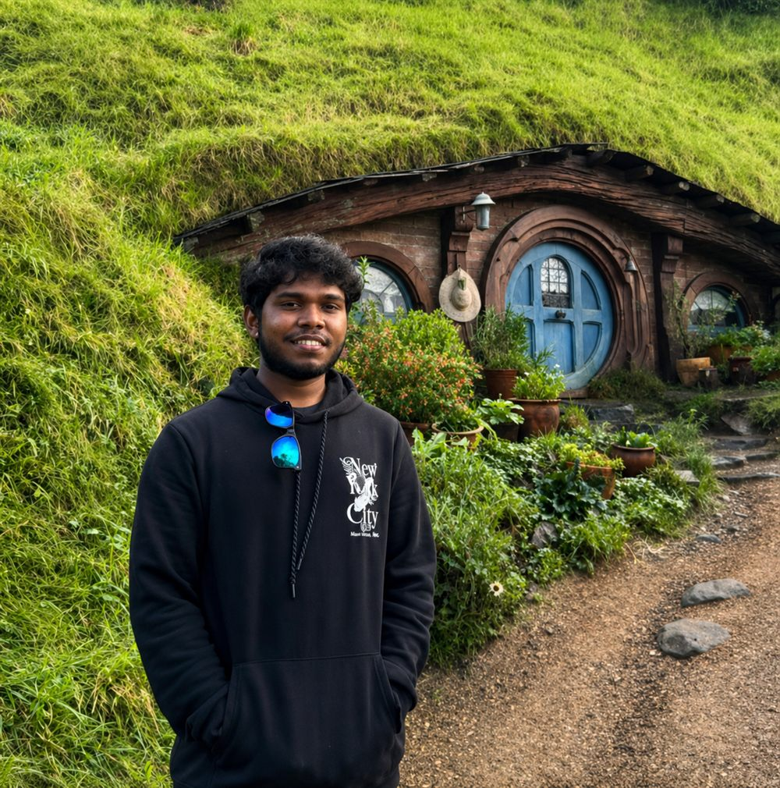

01 / About Me
About Me.
A short read on who I am, what I am studying, and where I sit in the Cyber Security and Networking space at Unitec.
Profile
3rd year Bachelors student at Unitec Institute of Technology specializing in Cyber Security and Networking. Practical experience in academic support, student governance, and a strong interest in building secure, resilient network environments.
Student Ambassador
Unitec Student Ambassador · 2025 Cohort
Selected as a Student Ambassador representing Unitec Institute of Technology. Responsibilities include representing the institution at outreach events, mentoring prospective students, and acting as a visible point of contact for the student community.
The role involves strong communication, professionalism, and a commitment to the values of the institution.
